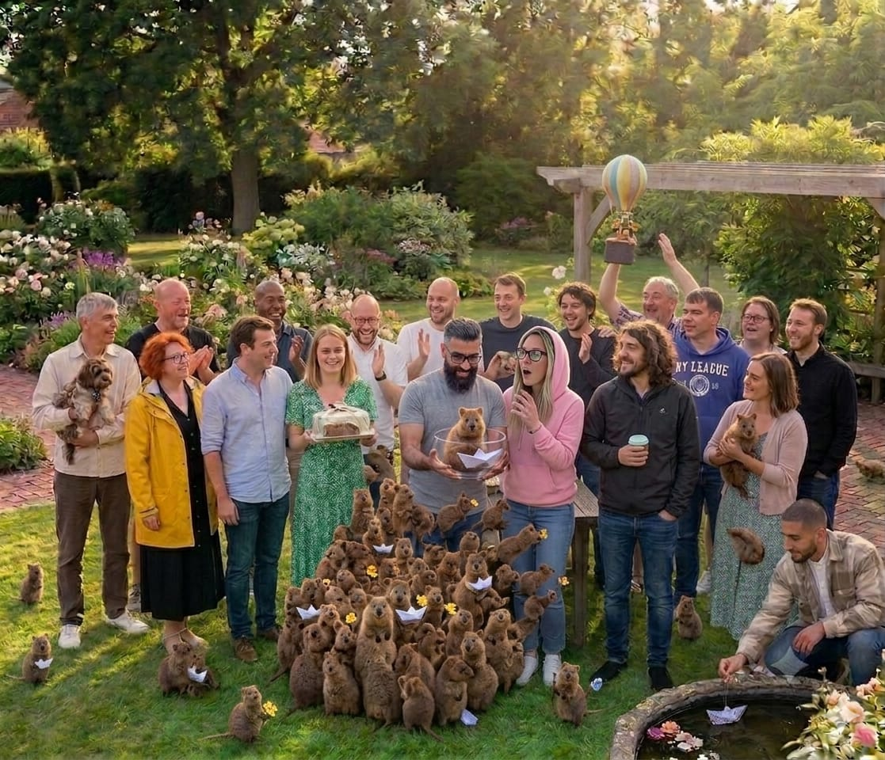

und das Licht, das ihr mir geschenkt habt. Bitte schalte deinen Ton ein.
Für immer dankbar für diese Reise ✨
Ein temporärer Abschied voller Hoffnung auf unser Wiedersehen.
Willkommen im Cockpit unseres gemeinsamen Erfolgs! 🚀✨
„Das Leben schreibt die besten Geschichten – und manchmal baut es uns eine kurze Verschnaufpause ein, damit wir danach mit doppelter Warp-Geschwindigkeit und voller Power gemeinsam durchstarten können! Das Beste an dieser Reise? Ganz klar: Ihr!“
Warum dieser Orbit strahlt! ⭐
Manchmal schlägt das Leben eine spannende Kurve ein – und das ist die perfekte Gelegenheit, um dankbar zurückzublicken und mit einem fetten Lächeln nach vorne zu schauen!
Ich habe diese Seite als lebendiges, fröhliches Logbuch für uns erschaffen. Sie ist ein Ort zum Feiern all der genialen Meilensteine, unzähligen Lacher und der mega Energie, die wir als Team geteilt haben!
Was wir gerockt haben: Wir haben nicht nur Code bezwungen und komplexe Logiken geknackt – wir haben aus wilden Code-Zeilen puren Spaß und echten Teamgeist gemacht! Jede gemeinsame Session war ein Highlight, bei dem gelacht wurde, bis die Server glühten. Diese Seite soll euch jeden Tag daran erinnern, was für eine fantastische Crew ihr seid. Die Ziellinie wartet schon auf uns!
Wir haben in den vergangenen Wochen den Orbit erobert! Jeder virtuelle Kaffee, jeder gelöste Bug und jedes breite Grinsen im Gesicht hat diese Reise zu etwas ganz Besonderem gemacht. ✨
Unsere legendäre Crew 👥✨
Ein Team, das zusammen lacht, bezwingt jedes Universum! Ihr wart und seid mein absolutes Highlight auf dieser Reise.
⭐
David, Marvin & Stefan
Die Chaos-Crew-Zentrale
Ihr Drei seid absolute Spitzenklasse! Danke für den genialen Support, die unkomplizierte Hilfe und die großartige Stimmung. Egal wie knifflig der Code war, mit eurem grenzenlosen Optimismus und eurer tollen Art im Rücken hat jede Sekunde einfach nur mega Spaß gemacht! Ihr seid echte Raketen!
🍪
Ramona, Chris, Bendix & Lee
Das Cookie-Crew-Squad
Was für eine fantastische Truppe! Eure super positive Energie und die herzliche Art haben jeden digitalen Raum sofort zum Strahlen gebracht. Ihr habt mit eurer guten Laune und euren Lachern für die perfekte Würze gesorgt. Bleibt genau so lebensfroh und motiviert, ihr seid spitze! ❤️
📋
Marcus Wunderle
Team-Manager / Backstage-Support
Ein unendliches Danke für deinen großartigen Support im Hintergrund! Du hast unsere Anträge und organisatorischen Flugbahnen nie aus den Augen verloren und uns sicher durch jeden bürokratischen Sturm manövriert. Auf dich war immer absolut Verlass! 📋🛰️
👑
Anna Hoff
Team-Managerin (Modul 1)
Danke für den absolut fantastischen und super motivierenden Start in Modul 1! Mit deiner ansteckend guten Laune und deiner engelsgleichen Geduld hast du uns jeden Tag begeistert. Du hast uns gezeigt, dass Programmieren richtig Spaß macht – danke für diese tolle Grundlage!
📋
Kevin Kersten
Team-Manager
Ein riesiges Dankeschön für deinen tollen Einsatz! Egal was anstand, du hast die Herausforderungen im Hintergrund mit Bravour gemeistert und warst immer mit bester Laune, super Tipps und einer helfenden Hand für uns am Start. So macht Zusammenarbeit richtig Laune!
🚀
Patrick Rosenbaum
Support & Nachhilfe
Du bist ein absoluter Motivationskünstler! Die Nachhilfe bei dir war extrem lehrreich, super strukturiert und hat dank deiner lockeren, positiven Art jedes Mal richtig viel Freude gemacht. Du hast komplexe Dinge einfach kinderleicht wirken lassen. Danke dir!
🌌
Tammo Zelle
Mentor & Feedback-Geber
Vielen Dank für dein großartiges, inspirierendes und extrem wertvolles Feedback! Deine motivierenden Worte haben mir richtig viel Schwung gegeben und Lust auf neue Herausforderungen gemacht. Du hast das Talent, Menschen zu bestärken und mitzureißen!
📡
Amir Mazhary
Crew-Mitglied
Es war mir eine absolute Freude, mit dir zusammenzuarbeiten! Deine clevere, fokussierte Art gepaart mit deiner super sympathischen Ausstrahlung hat unsere Runden jedes Mal bereichert. Danke für den tollen Austausch und die super gemeinsamen Meilensteine!
🎭
Carlos Brockmann
Entertainment & Information
Der absolute Gute-Laune-Garant im Orbit! Vielen Dank für die unzähligen mega unterhaltsamen, extrem informativen und einfach unfassbar lustigen Gespräche. Du hast die perfekte Portion Humor reingebracht und uns alle jeden Tag aufs Neue zum Strahlen gebracht!
⚡
Dominik Fischer
Crew-Mitglied
Gemeinsam mit dir auf Fehlersuche zu gehen, war kein Frust, sondern purer Spaß! Danke für deine super hilfsbereite, fröhliche Art und deinen unermüdlichen Teamgeist. Mit Kolleg*innen wie dir machen selbst die kniffligsten Aufgaben gute Laune!
🧠
Katrin Bergmann
Workshop-Leiterin
Deine Workshops waren ein absolutes Highlight! Du hast die Themen mit so viel Freude, Klarheit und Begeisterung vermittelt, dass man gar nicht anders konnte, als mitzufiebern. Danke für diese tolle, positive und extrem lehrreiche Erfahrung!
🏁
Steven Tanu
Crew-Mitglied
Deine positive Energie und deine Zielstrebigkeit stecken einfach an! Du hast den Blick immer optimistisch nach vorne gerichtet. Rockt Modul 3 mit Vollgas – ich freue mich schon riesig darauf, euch alle strahlend an der Ziellinie wiederzusehen!
🛡️
Stefan Kallinich
Crew-Mitglied / Mentaler Support
Du hast das Herz am absolut rechten Fleck! Deine Empathie, dein offenes Ohr und dein fantastischer, optimistischer Support haben mir unendlich viel Kraft und ein breites Lächeln geschenkt. Menschen wie du machen die Welt (und jedes Team) um ein Vielfaches heller!
✨ GEHEIMES MISSIONS-LOGBUCH FREIGESCHALTET ✨
Für immer dankbar für diese Reise ✨
„Manchmal läuft das Leben nicht nach Plan, und man muss eine Pause einlegen, um später wieder mit voller Kraft durchzustarten. Aber das Schwierigste daran ist, Menschen wie euch zurückzulassen – wenn auch nur für kurze Zeit.“
Es gibt Momente im Leben, da wird man von unerwarteten Ereignissen gezwungen, kurz innezuhalten, einen Schritt zurückzutreten und eine Pause einzulegen. Ein solcher Moment ist für mich leider genau jetzt gekommen. Schweren Herzens muss ich mich vorerst von euch verabschieden – doch ich gehe nicht mit dauerhafter Traurigkeit, sondern mit einem Herzen voller Stolz und unendlicher Dankbarkeit für das, was wir hier gemeinsam aufgebaut haben.
Wenn ich auf unsere bisherige Zeit zurückblicke, sehe ich weit mehr als nur einen Kurs. Ich sehe eine intensive Reise, die uns alle verändert hat. Ihr seid keine zufällige Kursgruppe für mich. Ihr seid Familie auf Zeit geworden. Jeder Kaffee, jeder Fehler im Code, den wir zusammen gelöst haben, und jedes gemeinsame Lächeln hat sich tief in meine Erinnerung eingebrannt.
Von der ersten Zeile Code bis in die Cloud 💻
Gemeinsam haben wir uns durch die faszinierende, aber oft erbarmungslose Welt der Webentwicklung und des Webdesigns gekämpft. Wir haben gelernt, Oberflächen durch sauberes Engineering zum Leben zu erwecken, haben uns den Kopf über komplexen Programmiersprachen zerbrochen, Architekturen gebaut und uns tief in die Welten von DevOps und der AWS Core-Infrastruktur eingegraben.
Ja, es gab sie – diese unzähligen Ohren-qualmenden Momente. Momente, in denen der Bildschirm nur so vor Fehlermeldungen strotzte, in denen die Logik einfach keinen Sinn ergeben wollte und die Verzweiflung so greifbar war, dass man am liebsten den Laptop zugeklappt hätte.
Der Funke, der uns gerettet hat: Unser Team 👥
In den Momenten der totalen Frustration passierte das Schönste überhaupt: Wir waren nie allein. Genau dann habe ich gemerkt, dass meine Teamkollegen manchmal einfach die besten Menschen sind, die man um sich haben kann. Ein kurzes Wort im Chat, ein gemeinsames Lachen über einen absurden Bug oder ein virtueller Schubs im richtigen Augenblick – ihr habt mich immer wieder aufgebaut, wenn die Luft raus war. Die Energie in unseren positiven Team-Projekten hat gezeigt, dass aus einer Gruppe von Individuen eine echte, eingeschworene Crew geworden ist. Wir haben nicht nur Code geteilt, sondern auch Nerven, Kaffee und echte Menschlichkeit.
Unsere Dozenten: Die Kapitäne auf stürmischer See ⚓
Diese Verbindung wäre niemals so stark geworden ohne unsere Dozenten. Sie waren für uns nie bloß Lehrkräfte, die starre Lehrpläne abarbeiten. Sie waren meine Mentoren, meine Ruhepole und die Brücke zwischen Theorie und echter Praxis. Mit unendlicher Geduld, tiefem Fachwissen und vor allem mit einer außergewöhnlichen menschlichen Wärme haben sie uns durch jeden Sturm manövriert. Sie haben an mich geglaubt, selbst wenn ich es selbst gerade überhaupt nicht konnte. Dafür danke ich euch von ganzem Herzen.
🚀 Mission Modul 3: Das Logbuch unseres Wissens
Unsere Reise quer durch den Software-Kosmos war intensiv. Hier sind die Tech-Sektoren, die wir uns gemeinsam Untertan gemacht haben:
🐧 Sektor 1: Linux Advanced & Shell
Abgetaucht in die Tiefen des Betriebssystems. Wir haben gelernt, Benutzerrechte zu verwalten, Prozesse zu bändigen und uns optimal auf die Linux Essentials Zertifizierung vorzubereiten.
🐍 Sektor 2: Python Grundlagen
Die Basis unserer Programmierlogik. Algorithmen, Kontrollstrukturen, Fehlerhandling und objektorientierte Programmierung bilden nun das stabile Fundament unserer Triebwerke.
⚡ Sektor 3: FastAPI & APIs
Moderne Web-Schnittstellen im Hyperantrieb. Wir haben gelernt, performante, asynchrone Backends aufzubauen, Requests zu verarbeiten und saubere API-Dokumentationen zu generieren.
🗄️ Sektor 4: Relationale Datenbanken
Datenstrukturen im Griff. Von Tabellendesigns, Primär- und Fremdschlüsseln bis hin zu komplexen Abfragen – unsere Daten liegen sicher verankert im Speicher.
☁️ Sektor 5: AWS Cloud Infrastruktur
Grenzenlose Skalierbarkeit. Wir haben gelernt, wie globale Netzwerke, Cloud-Server und virtuelle Instanzen bei den Amazon Web Services (AWS) orchestriert und deployt werden.
🤖 Sektor 6: KI-Tools & Digitale Kompetenzen
Der Autopilot der Zukunft. Wir haben gelernt, modernste KI-Systeme und Large Language Models strategisch im Entwickler-Alltag einzusetzen, Prompts präzise zu steuern und Workflows durch digitale Assistenzsysteme drastisch zu beschleunigen.
Das Kontrollzentrum unserer Mission. Wir haben gelernt, verteilte Systeme, agile Kommunikationstools, cloudbasierte Dateistrukturen und Versionskontrollen wie Git effizient einzusetzen, um auch über Lichtjahre Entfernung hinweg nahtlos im Team zu kollaborieren.
Die visuelle Benutzeroberfläche unseres Raumschiffs. Das Erschaffen von responsiven, barrierefreien und visuell beeindruckenden Interfaces mittels HTML5, modernen CSS-Layouts (Grid & Flexbox) sowie interaktiver Logik, um Datenströme lebendig zu machen.
🏁 Sektor 9: Agile Projekt-Abschlussphase
Das Meisterstück! Wir haben all dieses Wissen gebündelt und unter echten Bedingungen ein Softwareprojekt im Team realisiert – gesteuert durch Scrum, Daily Standups und Sprints. Ein Beweis echter Team-Elite!
🚀 Unsere Galaktische Route: Missions-Logbuch
Die Triebwerke glühen, die Datenströme sind stabil. Hier ist die exakte Flugbahn unserer Raumfähre:
🛰️ System-Status: 100% Orbit erreicht | Kurs: Ziellinie
🐧 Sektor 01
Linux Grundlagen & Essentials Orbit
Unser Einstieg in das Kontrollzentrum. Wir haben das Terminal gezähmt, Dateisysteme im Blindflug navigiert und Berechtigungen gesetzt.
bashchmodsshgrepUser Management
📡 Funkspruch von Missionsleiterin Marina:
"Willkommen in der Welt von Linux! Jedes Kommando auf der CLI bringt uns näher an die Sterne." Danke, Marina, für den perfektem Einstieg!
🐍 Sektor 02
Python Automatisierung & Backend-Strukturen
Schreiben der primären Steuerungssoftware unseres Raumschiffs. Von Schleifen bis hin zu REST-Schnittstellen mit FastAPI.
Python 3FastAPISQLAlchemyPostgreSQL
🔧 Taktischer Support – Copilot Patrick:
Wenn der Code abstürzte, war Patrick zur Stelle. Deine Nachhilfe war die Rettung für die Triebwerke – so unheimlich viel ist hängen geblieben!
☁️ Sektor 03
AWS Cloud Infrastruktur & Galaktische Skalierung
Die Skalierung unseres Systems in die unendlichen Weiten des Netzwerks. Globale EC2-Server-Cluster aufsetzen und VPCs konfigurieren.
AWS EC2VPC CloudIAM SecurityS3 Storage
🌌 Flotten-Zentrale – Koordinatorin Katrin:
Für jede Frage offen, für jedes Anliegen ein Sicherheitsnetz. Katrin, deine Workshops waren eine Bereicherung für diesen Lebensabschnitt!
🖥️ Sektor 04
Synchronisation digitaler Arbeitsumgebungen
Einrichten und Optimieren unserer digitalen Workspaces. Koordination von asynchronen Arbeitsabläufen, Ticket-Systemen und versionierter Code-Verwaltung.
Git & GitHubAgile ToolsCloud WorkspacesLinux Remote OS
📡 Funkspruch aus der Kommandozentrale:
"Egal wie weit wir verstreut sind – unsere Arbeitsumgebung hält die Crew zusammen. Die perfekte Struktur für produktives Arbeiten im digitalen Raum!"
🎨 Sektor 05
Webdesign & Galaktische Webentwicklung
Das Gestalten und Programmieren moderner Web-Interfaces. Hier schlägt mein Herz am höchsten – das Erschaffen interaktiver Erlebnisse direkt im Browser.
"Hier brennt mein Herz! Webentwicklung ist genau das, was ich machen will. Das Erschaffen von Code, den man nicht nur fühlt, sondern auch sieht und bedient."
🏁 Sektor 06
Die Ziellinie: Das Abschluss-Projekt & Feedback
Zusammenführung aller Teilsysteme zu einer funktionierenden Raumstation unter echten Projektbedingungen.
Full-Stack IntegrationLive DeploymentScrum Sprint
🎤 Flotten-Auditor – Mentor Tammo:
Das wertvolle Feedback zu den Präsentationen war der Treibstoff für das Finale. Tammo, deine Worte haben mir unheimlich viel Mut geschenkt!
🤍 Mein unsichtbarer Kampf & Warum ich diese Pause brauche
Viele von euch haben nicht geahnt, wie schwer der unsichtbare Rucksack war, den ich jeden Morgen mit in den Kurs gebracht habe. Der tägliche, leise Kampf gegen die Schatten von PTBS (Posttraumatischen Belastungsstörung), sozialen Ängsten und Depressionen ist unendlich kräfteraubend. Wenn dann das eigene Leben im privaten Raum von plötzlicher, erschütternder Gewalt, Polizeieinsätzen und einem schmerzhaften Sorgerechtsstreit zerrissen wird, zieht es einem endgültig den Boden unter den Füßen weg. Nach einem zweiten, schnellen Polizeieinsatz habe ich die Reißleine gezogen und mich endgültig von meinem Ex-Partner getrennt.
Zu all dem emotionalen Ballast kommt nun auch noch der bürokratische Druck von außen: Die Agentur verlangt von mir, dass ich eine Pause einlegen, um mich auf dem Arbeitsmarkt umzusehen. Wenn sich in den nächsten zwei Monaten auf dem Arbeitsmarkt nichts ergibt, soll ich erst danach wieder in Modul 3 einsteigen.
Ich will ehrlich zu euch sein: Das alles macht für mich kaum Sinn und fühlt sich unglaublich schwer an, da mein Ziel die Webentwicklung ist. Es ist das, was ich machen will, das, wofür mein Herz brennt! Diese erzwungene Schleife drehen zu müssen, fühlt sich an wie ein schmerzhafter Schritt zurück.
Doch genau in all dieser Dunkelheit ist auch ein echtes Wunder passiert. Eine ganz besondere person aus meinem Umfeld hat mich gefunden. Sie ist seither ununterbrochen an meiner Seite, stützt mich bedingungslos, fängt mich auf und zeigt mir jeden Tag, dass es sich lohnt, für die eigene Heilung und die eigenen Träume zu kämpfen. Dieser einen Person verdanke ich heute in so vielen Dingen mein Leben.
Diese Pause ist kein Aufgeben – sie ist mein Anlauf, um gesund zu werden und gestärkt zurückzukommen. Danke für euer tiefes Verständnis und euer Mitgefühl! ❤️
✮⋆˙☆ Ein großes Danke an jeden von euch! ☆˙⋆✮
Jeder von euch hat dieses Team einzigartig gemacht. Ich werde euch unglaublich vermissen (Bewege deine Maus über die Karten ✨):
Ein Team ist weit mehr als die Summe seiner Programmierzeilen. Ihr wart mein verlässlicher Kompass in diesem digitalen Universum, habt Code bezwungen und jede Hürde mit einem Lächeln genommen.
⭐
Marvin, David & Stefan
ChaosCrew-Zentrale
Ein unendliches Danke für euren unermüdlichen Support im System! Ihr wart in den Momenten zur Stelle, in denen der Code gestreikt hat und ich selbst am Zweifeln war. Euer Beistand bleibt unvergessen und fest in meiner eigenen Matrix verankert.
🍪
Ramona, Chris, Bendix, Daniel, Lee Stephen
CookieCrew-Squad
Danke für die unvergessliche Energie im CookieCrew-Squad! Ihr habt es geschafft, mit eurer herzlichen Art, unzähligen Lachern und purer Motivation jeden noch so grauen, digitalen Raum im Orbit in Sekundenschnelle zum Strahlen zu bringen. ❤️
📋
Marcus
Team-Manager
Vielen Dank für deinen unermüdlichen Einsatz im Hintergrund. Du hast unsere Anträge und bürokratischen Flugbahnen niemals aufgegeben und jeden Tag aufs Neue harte Herausforderungen für uns gemeistert, um den Kurs zu halten.
📋
Kevin
Team-Manager
Auch wenn die kosmischen Bedingungen und viele Situationen in letzter Zeit absolut nicht leicht oder kompliziert waren: Du warst als Fels in der Brandung stets mit gutem Rat, ehrlichen Worten und tatkräftiger Hilfe zur Stelle. Danke!
🧠
Katrin
Workshop-Leiterin
Egal wie komplex die Materie war: Für Fragen konntest du Türen öffnen. Deine Workshops waren eine unfassbar strukturierte, lehrreiche und tolle Erfahrung, die mich in diesem Lebensabschnitt nachhaltig prägen wird.
🚀
Patrick
Support & Nachhilfe
Du hast mir bei der Nachhilfe und dem Verstehen komplexer Logiken so unglaublich gut und geduldig geholfen. Das vermittelte Wissen und deine logischen Kniffe sind dauerhaft im Speicher meines internen Systems eingebrannt!
🌌
Tammo
Mentor
Ein herzliches Dankeschön für dein wertvolles, ehrliches und konstruktives Feedback zu unseren Präsentationen. Deine treffenden Worte haben mir in den richtigen Momenten echten Mut geschenkt und mich weitergebracht.
👑
Anna Hoff
Team-Managerin
Vielen Dank für den perfekten Start in Modul 1! Du hast eine Geduld aus absolutem Stahl bewiesen, hast trotz anstrengender Vorträge nie aufgegeben und mir in Momenten geholfen, in denen ich den Wald vor lauter Bäumen nicht sah.
Unsere Momente 🎬
Ein kleiner filmischer Rückblick an unsere unvergesslichen Tage, Sessions und lachenden Gesichter im Orbit.
Das Echo unserer ChaosCrew ✨

📌 Eure Spuren in meinem Herzen
Bevor ich mich in meine kurze Pause verabschiede, möchte ich dich bitten: Hinterlass mir ein paar Worte auf dieser digitalen Pinnwand!
Bisherige Nachrichten:
⏳ Mein Countdown bis zu Modul 3
Die Zeit läuft, bis wir hoffentlich wieder gemeinsam im Kurs sitzen:
60Tage
00Stunden
00Minuten
✨ Das Logbuch des Herzens ✨
💡 Klicke auf ein Crew-Mitglied, um die persönliche Nachricht freizuschalten:
✦ Chaos-Crew-Mitglied: Marvin, David & Stefan ⭐
✦ Cookie-Crew-Mitglied: Ramona, Chris, Bendix, Daniel, Lee Stephen 🍪
✦ Team-Manager: Marcus 📋
✦ Team-Manager: Kevin 📋
✦ Workshop-Leiterin: Katrin 🧠
✦ Support und Nachhilfe: Patrick 🚀
✦ Mentor: Tammo 🌌
✦ Team-Manager: Anna Hoff 👑
Ich komme wieder. Versprochen. Besteht Modul 3 für mich mit – wir sehen uns an der Ziellinie! Danke für alles!